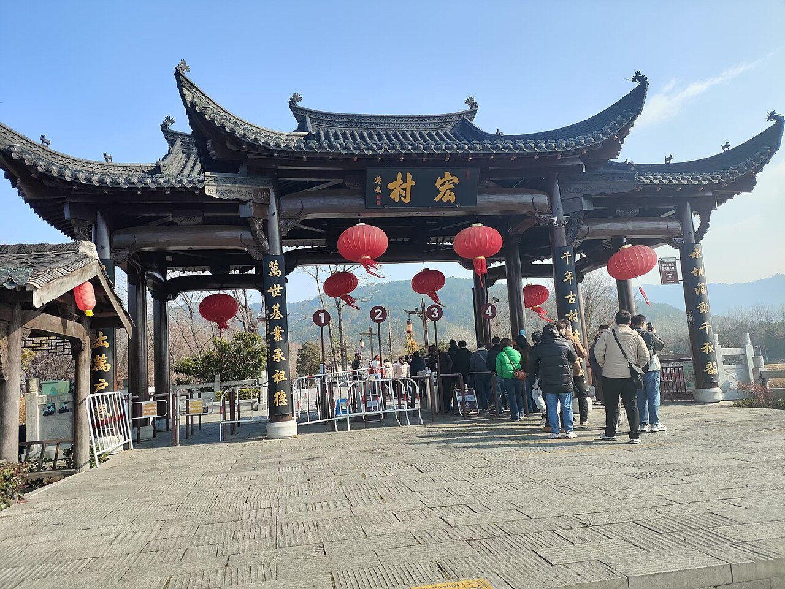

皖南川藏线（又称「江南天路」）位于安徽宁国至泾县之间，全程约 120 公里，弯道密集、风景秀丽。青龙湾的碧水、水墨汀溪的竹林、查济与桃花潭的古村——这是长三角车主最方便的「小川藏」，周末即可往返。
经典走向：宁国—青龙湾—储家滩—方塘乡—板桥村—水墨汀溪—苏红乡—查济—桃花潭—泾县。部分路段狭窄，会车需谨慎。与黄山、九华山可组合成 4–5 日皖南深度游。
3–5 月油菜与桃花，9–11 月秋色与晒秋。夏季竹海清凉但雨水多，需关注山区塌方与落石公告。古村住宿多为民宿，旺季提前预订。
Itinerary
分日行程
宁国 → 青龙湾 → 储家滩
青龙湾水库碧如翡翠，储家滩露营与烧烤热门（遵守防火规定）。傍晚水边散步，感受江南山水的精致。
方塘 → 板桥 → 水墨汀溪
「皖南川藏线」精华段，盘山公路与竹海相伴。水墨汀溪景区可徒步戏水，夏季避暑胜地。
汀溪 → 查济 → 桃花潭 → 泾县
查济古村徽派建筑保存完好，桃花潭因李白诗句闻名。泾县为宣纸之乡，可参观宣纸文化园。
泾县 → 旌德 → 返回宁国
可选访旌德江村或石门台自然保护区，体验更小众的皖南山景。经 S214 返回宁国，完成小环线。
宁国 → 宣城/芜湖 → 返程
若从长三角出发，此日可用于返程。可在宣城品文房四宝文化，或经芜湖长江大桥回南京、杭州方向。
Photo Essay
沿途影像




Highlights
核心景点
青龙湾
水库与半岛组合，湖水清澈，储家滩一侧适合露营与皮划艇（正规运营商）。
水墨汀溪
竹林、瀑布与溯溪步道，夏季比城市低几度。景区内有玻璃栈道等体验项目。
查济古村
皖南最大古民居群之一，明清建筑与流水绕村。写生与摄影爱好者常驻。
桃花潭
李白「桃花潭水深千尺」出处，山水与古村相映。秋季层林尽染，春季桃花点缀。
板桥村
川藏线中段高山村落，云雾常绕竹林。是体验皖南山路弯道与驾驶乐趣的关键节点。
Route
途经站点
东入口
长三角自驾常用起点。
水库风光
储家滩露营热门。
竹海溯溪
夏季避暑核心。
古村
徽派建筑代表。
西出口
宣纸文化可选访。
Practical
实用信息
- 山路弯多路窄，勿越线超车， horn 在盲区短鸣。
- 部分路段无护栏，雨天慎行，关注地质灾害预警。
- 古村停车有限，旺季建议早到或住村内民宿。
- 皖南多隧道，进隧道前开灯、减速。
- 尊重村民生活，无人机拍摄前先询问。
EV Tips
新能源出行提示
驾驶腾势 N7 等纯电 SUV 出发前，请特别注意以下事项：
- 宁国、泾县、宣城有快充，山区民宿慢充为主，城镇出发前满电。
- 短线路程不长但爬坡多，留意山区路段能耗。
- 部分盘山路段无信号，下载皖南离线地图。